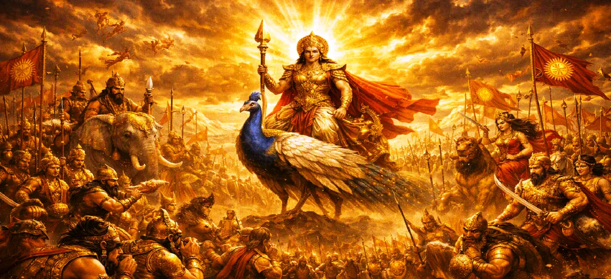

तारकासुर के विरुद्ध मार्च
कुमार खण्ड का अध्याय 22 दिव्य सेना की राजसी और विस्मयकारी प्रगति का वर्णन करता है क्योंकि भगवान स्कंद अपनी अजेय सेना को सरवन से दुश्मन के गढ़ की ओर ले जाते हैं।
उनके पैरों के नीचे धरती कांप रही है और स्वर्ग आशीर्वाद बरसा रहा है, यह मार्च न्याय की सुबह और राक्षसी उत्पीड़न के आसन्न अंत का संकेत देता है।
अध्याय 22 की मुख्य बातें और पूर्ण अवलोकन
राजसी अग्रिम
दैवीय सेना का युद्धभूमि की ओर भव्य संचलन
स्कंद का नेतृत्व
भगवान कुमार सर्वोच्च संतुलन के साथ सामने से नेतृत्व कर रहे हैं।
शुभ शकुन
अनुकूल संकेत, शानदार रोशनी, और आकाश को भरने वाली दिव्य हवाएँ।
दिव्य आशीर्वाद
स्वर्ग से मधुर-सुगंधित पुष्पों की वर्षा और आनंदमय जयघोष।
सांसारिक अनुनाद
दिव्य यजमानों के शक्तिशाली पदचाप से धरती गूँज उठी।
शत्रु दृष्टिकोण
अत्याचारी तारकासुर के साम्राज्य की ओर तेजी से बढ़ रहा है।
इस अध्याय में विस्तृत मुख्य विषय
1. चलने का संकेत: सरवाना से प्रस्थान
तैयारियां पूरी होने और उनकी कमान के तहत दिव्य सेना पूरी तरह से संगठित होने के साथ, भगवान स्कंद ने मार्च करने का ऐतिहासिक संकेत दिया। सरवन के ईख के बगीचे में तुरही बजती है, शंख एक साथ बजते हैं, और राजसी मेज़बान राक्षस तारकासुर के गढ़ की ओर अपनी लंबे समय से प्रतीक्षित यात्रा शुरू करता है।
2. मार्चिंग सेना का भव्य गठन
मार्चिंग सेना को एक अभेद्य और शानदार संरचना में व्यवस्थित किया गया है। वीर जनरलों के नेतृत्व में उन्नत मोहरा इकाइयाँ रास्ता खोलती हैं, जिसके बाद देवताओं की सेनाएँ, दिव्य पैदल सेना और शक्तिशाली योद्धा आते हैं। प्रत्येक पार्श्व सुरक्षित है, और व्यूह का अनुशासन युवा कुमार की सर्वोच्च सामरिक प्रतिभा को दर्शाता है।
3. शुभ संकेत और दिव्य आशीर्वाद
जैसे-जैसे सेना आगे बढ़ती है, प्रकृति स्वयं आनन्दित होती है। रास्ते में ठंडी, सुगंधित हवाएँ चलती हैं, पक्षी दाहिनी ओर शुभ वृत्तों में उड़ते हैं, और दिव्य प्रकाश की शानदार चमक आकाश को रोशन करती है। ऊपरी लोकों से, ऋषि और दिव्य प्राणी सुगंधित फूलों की वर्षा करते हैं और भगवान स्कंद की विजय के लिए प्रार्थना करते हैं।
4. मोहरा में भगवान स्कंद की प्रेरक उपस्थिति
विशाल सेना के शीर्ष पर भगवान स्कंद सवार हैं। अपने उज्ज्वल रूपों से दिव्य वैभव बिखेरते हुए और दिव्य कवच और हथियारों से सुशोभित, उनकी उपस्थिति हर सैनिक में असीम साहस पैदा करती है। उनकी शांत, दृढ़ अभिव्यक्ति पूरे ब्रह्मांड को आश्वस्त करती है कि धार्मिकता जल्द ही बहाल हो जाएगी।
5. आगे बढ़ने पर तीनों लोकों की प्रतिक्रिया
तीनों लोक राजसी मार्च को सांस रोककर देखते हैं। आश्रमों में संत सफलता के लिए प्रार्थना करते हैं, दिव्य युवतियां पहले से ही विजय के गीत गाती हैं, और यहां तक कि तत्व भी दिव्य मिशन के समर्थन में एकजुट होते दिखते हैं। भय का स्थान पूरी तरह से गहन, सामूहिक आशा ने ले लिया है।
6. तारकासुर के युद्धक्षेत्र के निकट पहुँचना
स्थिर और अजेय गति के साथ, दिव्य सेना ब्रह्मांडीय दूरी तय करती है और तारकासुर के दुर्जेय गढ़ की सीमाओं के पास पहुंचती है। वातावरण तब बदलता है जब राक्षस के क्षेत्र की अंधेरी, दमनकारी ऊर्जा आगे बढ़ती हुई दिव्य सेनाओं की चकाचौंध, शुद्ध रोशनी से मिलती है, जो आसन्न टकराव के लिए मंच तैयार करती है।
7. अध्याय 23 की ओर (तारकासुर युद्ध की तैयारी)
जैसे ही भगवान स्कंद की अजेय सेना शत्रु द्वार के बाहर डेरा डालती है, उनके आगमन की लहरें राक्षस राजा तक पहुँचती हैं। यह सीधे अध्याय 23 में ले जाता है: **तारकासुर युद्ध की तैयारी करता है**, जहां अत्याचारी को दैवीय सेना के आगमन के बारे में पता चलता है और चुनौती का सामना करने के लिए अपनी राक्षसी सेनाओं को लामबंद कर देता है।
अध्याय 22 की मुख्य शिक्षाएँ और आध्यात्मिक तथ्य
आगे की गति
धार्मिक कार्य के लिए बाधाओं की ओर स्थिर, उद्देश्यपूर्ण प्रगति की आवश्यकता होती है।
दिव्य संरेखण
जब सत्य का नेतृत्व किया जाता है, तो प्रकृति और उच्च शक्तियाँ भी मार्ग का समर्थन करती हैं।
प्रेरक नेतृत्व
एक सच्चा नेता सबसे आगे चलता है और अनुयायियों में साहस पैदा करता है।
सामरिक आदेश
अंधकार का मुकाबला करने के लिए अनुशासन और संरचित व्यवस्था महत्वपूर्ण है।
स्वर्ग की कृपा
धर्म के लिए लड़ने वालों के साथ आशीर्वाद और शुभ संकेत आते हैं।
आसन्न विजय
प्रकाश की प्रगति अनिवार्य रूप से उत्पीड़न की हार की शुरुआत करती है।
आध्यात्मिक चिंतन
अध्याय 22 हमें सिखाता है कि एक बार आध्यात्मिक संकल्प स्थापित हो जाने पर, हमें अपने भीतर और आसपास की नकारात्मकता का सामना करने के लिए सक्रिय रूप से और साहसपूर्वक आगे बढ़ना चाहिए। आध्यात्मिक मुक्ति की ओर यात्रा के लिए गति, अनुशासन और आंतरिक दिव्य के अटूट मार्गदर्शन की आवश्यकता होती है।
अध्याय 22 का संदेश जीना
अपनी व्यक्तिगत चुनौतियों और बुरी आदतों पर काबू पाने की दिशा में निर्णायक, उद्देश्यपूर्ण कदम उठाएँ।
कठिन या अज्ञात परिस्थितियों में जाने पर भी आंतरिक अनुशासन और संतुलन बनाए रखें।
विश्वास रखें कि जब आपके इरादे शुद्ध होंगे, तो उच्च शक्तियाँ आपके नेक प्रयासों का समर्थन करेंगी।
प्रमुख आध्यात्मिक अवधारणाएँ
दिव्य सेना का औपचारिक एवं सामरिक मार्च.
दैवीय प्रगति के साथ अनुकूल ब्रह्मांडीय संकेत और संकेत।
भगवान स्कंद परम वैभव के साथ सेना के अग्रभाग का नेतृत्व कर रहे हैं।
धार्मिकता की पुनर्स्थापना के लिए की गई पवित्र यात्रा।
सेनाओं का सामरिक एवं अभेद्य सैन्य गठन।
अग्रिम शत्रु के क्षेत्र के निकट पहुँचना।
अध्याय सारांश
कुमार खण्ड अध्याय 22 में सर्वोच्च सेनापति भगवान स्कंद के नेतृत्व में सरवन से तारकासुर के गढ़ की ओर शुभ संकेतों, दिव्य आशीर्वाद और अटूट संकल्प के साथ दिव्य सेना के शानदार मार्च का वर्णन किया गया है।
अक्सर पूछे जाने वाले प्रश्न
1. कुमार खण्ड अध्याय 22 का विस्तृत फोकस क्या है?
अध्याय 22 सर्वोच्च सेनापति भगवान स्कंद के नेतृत्व में दिव्य सेना की राजसी और विजयी प्रगति पर केंद्रित है, जब वे सरवण से तारकासुर के राक्षस गढ़ की ओर आगे बढ़ रहे थे।
2. दैवीय शक्तियों के मार्च का नेतृत्व कौन करता है?
मार्च का नेतृत्व भगवान स्कंद (कुमार/कार्तिकेय) द्वारा किया जाता है, उनके साथ प्रमुख खगोलीय सेनापति और इंद्र और अग्नि जैसे देवता भी होते हैं।
3. मार्च के साथ कौन से खगोलीय चिन्ह चलते हैं?
अनुकूल संकेत, शानदार रोशनी, शुभ हवाएं और आकाश से फूलों की वर्षा सेना की प्रगति के साथ होती है।
4. अध्याय 22 के बाद कौन सा अध्याय आता है?
अगला अध्याय अध्याय 23 है, जिसका शीर्षक है 'तारकासुर युद्ध की तैयारी'।
"भगवान स्कंद के नेतृत्व में, आगे बढ़ती दिव्य सेनाएं अत्याचारी के द्वार की ओर धर्म की अजेय रोशनी ले गईं।"
कुमार खण्ड के माध्यम से जारी रखें
अध्याय 22 तारकासुर के विरुद्ध अभियान का विवरण देता है। अगले अध्याय को जारी रखें, तारकासुर युद्ध की तैयारी करता है।